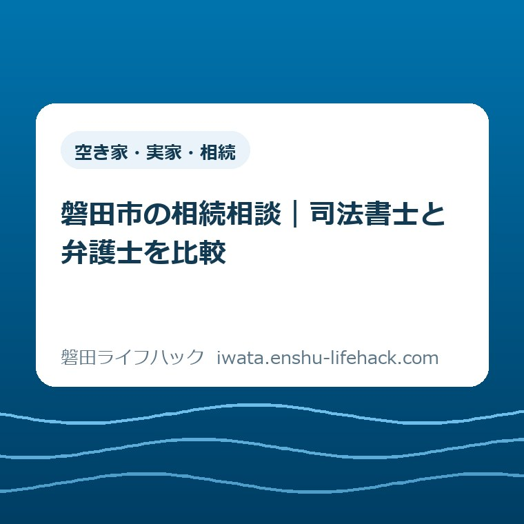
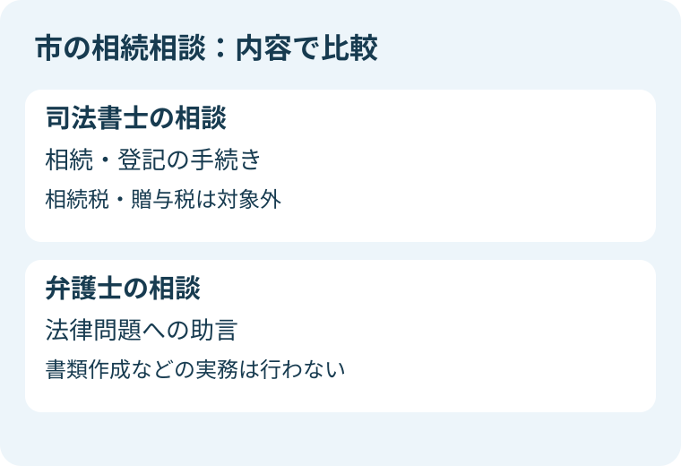
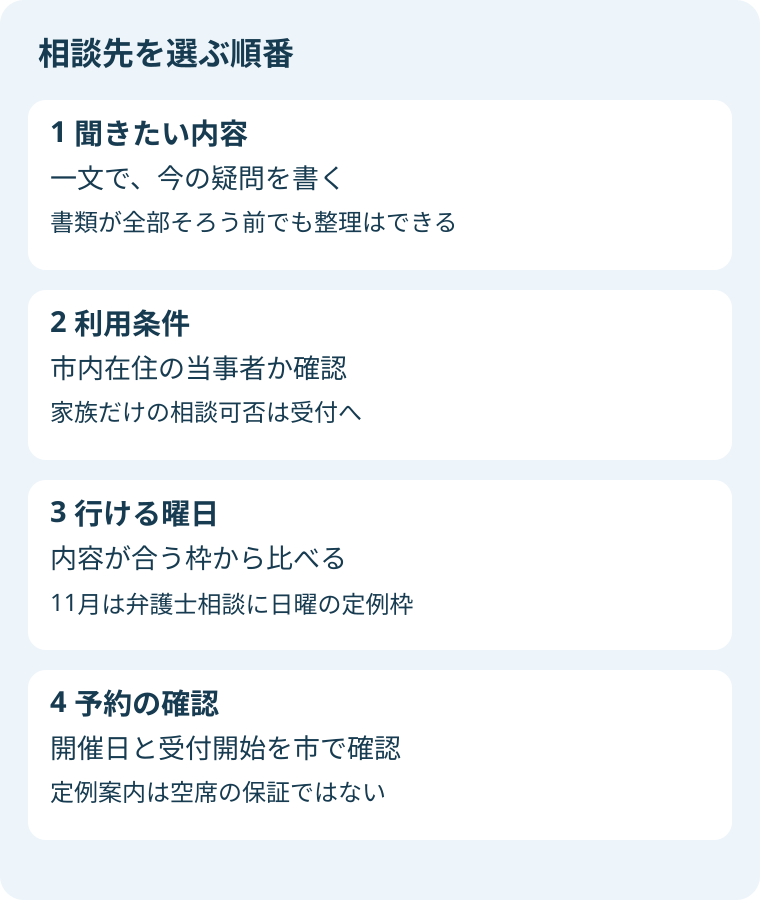

空き家・実家・相続
磐田市の相続相談｜司法書士と弁護士を比較

この記事の要点
Q. 実家の相続は司法書士と弁護士、どちらに相談する？
A. 利用可否は個別の事情で変わります。市の司法書士相談は相続・登記の手続き、弁護士相談は法律問題への助言が入口です。内容と利用条件を先に、行ける曜日を次に比較します。11月の日曜定例枠も、開催と予約の確認が必要です。
書類を集めてきた家族が、相談先で迷わないために
相続の相談窓口は、家族関係や相談内容によって利用できる範囲が変わります。磐田市の相談も、市内に家があれば誰でも使えるという案内ではありません。最初に本人の住所と聞きたい内容を確かめ、その後で曜日を比べると、休みを取ってから相談先の違いに気づく行き違いを減らせます。
実家の引き出しから届いた封筒を探す。きょうだいに連絡する。仕事の合間に市のページを読む。その段階まで来るだけでも、家族は時間を使っています。書類が全部そろっていないことを、準備を何もしていないことと同じに扱う必要はありません。
大石浩之（磐田市／不動産業）です。私は、相談先を選ぶときには「誰が優れた専門家か」より、「今回の25分や30分で、何を確かめたいか」を先に置くと考えています。この記事では資格全体の業務範囲ではなく、磐田市が設ける二つの面談相談の案内を比べます。
根拠は磐田市の「相続・登記相談」と「弁護士法律相談」です。2026年10月20日に確認しました。前者は司法書士が相続や登記の手続きに応じる相談、後者は法律問題への対処や専門家への依頼の要否を助言する相談です。どちらも相談後の手続きをすべて代行する窓口、と読み替えないでください。
相談内容を比べる：手続きの疑問か、法律問題の整理か
磐田市の相続・登記相談の公式案内は、司法書士が相続や登記の手続きに関する相談に応じるとしています。一方で、相続税と贈与税の相談には応じられないことも明記しています。「相続」という同じ言葉でも、税額の相談まで含むわけではありません。
たとえば、実家の名義に関する書類を見て、次に何を調べればよいか分からない。そんなときは、相続・登記相談の対象に合うかを受付に聞く入口になります。ここでの例は相談内容を言葉にするためのものです。個別の案件を必ず受けられるという判定ではありません。
登記制度そのものの違いを先に確認したい方は、相続登記と相続人申告登記の違いを参照できます。制度名が分かっただけで、自分の家がどの手続きに当たるかまで決める必要はありません。迷っている箇所を相談に持ち込むための下読みです。
磐田市の弁護士法律相談の公式案内は、専門知識が必要な法律問題について、対処方法や法的手続き、専門家に依頼すべきかを助言するとしています。ただし、この相談では書類作成などの実務はできません。相談を受けた日に文書が完成する、という期待とは分けておきます。
家族の話が食い違い、何が法律上の論点か分からない場合には、弁護士相談の対象になるかを尋ねる考え方があります。ただし「話し合いが難しいなら必ずこちら」と振り分けることはしません。相談済みの相手がいるか、裁判で審理中かなど、利用できるかを左右する事情もあるからです。

曜日を比べる：11月は弁護士相談に日曜の定例枠
相続・登記相談の定例日は毎月第1・第3火曜です。公式案内では午後1時30分から午後4時30分まで、1人25分以内とされています。火曜日の午後を使えるかどうかは、本人の仕事だけでなく、通院や送迎の予定とも照らし合わせたいところです。
弁護士法律相談の定例日は毎月第1・第3・第4木曜です。さらに、4月・6月・11月・2月には第2日曜の案内があります。平日だけだと思っていた方には、11月の日曜枠が比較材料になります。毎月の日曜開催ではない点も、一緒に押さえておきます。
弁護士相談の木曜枠は午後1時30分から午後5時まで、日曜枠は午前9時から正午までです。いずれも1人30分以内。時間の長さだけなら司法書士相談より5分長い計算ですが、その差で相談先を選ぶものではありません。聞きたい内容が相談対象に合っていることが先です。
両方の公式ページには、定例日を変更する場合があると書かれています。そのため本記事では、2026年11月の特定日の開催や予約の空きを保証しません。定例案内から候補を持つことと、実際に予約が取れることは別です。勤務先に休暇の相談をする前に、開催情報を市で確認してください。
私が勧めたい比較の順番は、内容、利用条件、曜日です。日曜なら休みやすいという事情は、十分な理由になります。しかし税の相談をしたいのに、日曜があるからという理由だけで弁護士の市民相談を予約すれば、当初の目的とずれる可能性があります。先に相談内容を伝えるひと手間が、結果として家族の移動を減らします。
利用条件を比べる：家の場所と相談者の住所は別
二つの相談は、どちらも「磐田市在住の当事者」が相談できる方として案内されています。実家が磐田市にあることと、相談する人が磐田市に住んでいることは同じではありません。遠方の子が親に代わって相談したい場合も、利用条件を満たすかを先に受付へ確認します。
家族の付き添いを希望するときは、本人が来るのか、家族だけなのかを分けて伝えてください。家族であることだけを根拠に、代理相談が必ず可能とは書けません。誰が当事者で、誰が説明を助ける立場なのかを受付が判断できるようにする、という意味です。
相続・登記相談では、同じ案件で繰り返し相談することは原則として利用できません。弁護士法律相談も、同じ案件での繰り返しを利用できない場合として掲げています。何度も通えば一連の手続きが終わる仕組み、と受け取らず、初回の助言の後に必要な依頼先を確かめる場として考えます。
弁護士法律相談は、市が相手方の場合、裁判所で審理中の場合、紛争の相手が同席する場合などにも利用できないとしています。また、相手先が先に相談している場合など、相談を受けられないことがあります。家族全員で集まって話をつける場として予約する前に、この条件を確認してください。
市の相談を使えるかどうかと、法律上の主張が認められるかどうかも別です。受付で利用条件を確かめることは、相続の結論を決めることではありません。相談者が言いにくい事情もありますが、既に専門家へ依頼している、相手が相談したか分からない、といった現状は、分かる範囲で伝えるのが私の提案です。
予約方法を比べる：同じ電話番号でも受付開始が違う
二つの予約先は、市民相談センターの電話0538-37-4746です。予約は原則として電話で、先着順と案内されています。ただし予約受付の開始日は共通ではありません。同じセンターだから同じ日に申し込める、と考えると予定がずれることがあります。
相続・登記相談は、原則として前月25日から予約受付が始まります。25日が閉庁日または木曜の場合は翌開庁日になる案内です。弁護士相談は、原則として相談日の1週間前の木曜から。日曜開催分は10日前の木曜からとされています。これは受付の原則であり、空席状況ではありません。
電話では氏名、住所、昼間連絡の取れる電話番号、主な相談内容、相談日時を確認する案内があります。家族の連絡先を使いたい事情があれば、その希望も受付に伝えます。この記事では、予約担当者が電話口で登記や法律問題の結論を出すとは扱いません。受付と専門家の面談は役割が違います。
相談場所は両方とも、市役所本庁舎1階の市民相談センター相談室です。公式案内は、南側正面玄関から入って右手突き当たりと説明しています。相談開始の10分前までの来場も案内されています。面談時間だけで仕事を抜ける時間を計算せず、往復や館内移動を加えて考えたいところです。
予約受付時間や開催情報は、実際に電話する日の市の最新案内で確認してください。11月に利用する予定なら、10月に見た案内をそのまま翌月にも当てはめない姿勢が役立ちます。家族の予定表には、確定した相談日時と、まだ確認していない事項を別々に書くと混乱を防げます。

短い相談時間を、家族の事情を説明するだけで終えない工夫
25分や30分の相談に、家族の長い経緯を全部収めるのは容易ではありません。私は、書類の枚数を増やす前に「相談が終わったとき、何が分かっていれば助かるか」を一つ書くことを提案します。これは市が指定した提出書類ではなく、家族向けの準備の工夫です。
「実家の相続を全部解決したい」だけだと、どこから説明するか迷います。「名義の確認から始めたい」「専門家へ依頼する段階かを知りたい」といった一文なら、最初に相談の目的を示せます。どちらが正しい質問かを競う必要はありません。今の家族が一番止まっている箇所を選びます。
次に、手元の書類の名前と、そこに書かれた日付だけを控えます。中身を理解し切るまで相談できない、という意味ではありません。分からない書類は「名前はこれ、意味は未確認」と書けば十分に区別できます。原本や写しを何点持参すべきかは、予約時に相談内容に合わせて確認してください。
市から相続人代表者届が届いている場合には、相続人代表者届の提出準備の記事で書類の目的を整理できます。届いた封筒の話と、不動産の名義の話を一つにして説明しないための参考です。この比較記事だけで、届出や登記の完了を判断しないでください。
家族間で確かめた事実と、まだ確認していない話も分けます。「きょうだいからそう聞いた」と「書類にそう記載されている」は情報の出どころが異なります。相談する人がその場で断言できないことを無理に埋めるより、何を持ち帰って調べるかを専門家と整理するほうが次の行動につながると私は考えます。
最後の質問には「次に、誰へ何を確認する必要がありますか」を置くとよいと思います。相談の答えを家族全員に説明し直す負担もあるからです。後で正式に依頼する場合の費用や業務内容は、市の面談時間とは別に、依頼先へ確認する項目です。相談の予約が、そのまま実務の契約になると考えないでください。
良い点と注文したい点：入口は同じでも違いが見える案内に
良い点は、市が相談員の種類だけでなく、対象外の内容まで公表していることです。司法書士相談で税は扱わないこと、弁護士相談で書類作成はしないことが読めます。限られた時間に何を期待できるのかを、家族が出発前に調整できる情報です。
もう一つの良い点は、弁護士相談に年4か月の日曜枠が案内されていることです。平日に仕事を休みにくい家族には、相談先を検討する材料が増えます。ただし、その枠に行けることだけで内容が合うとは限りません。利用条件と曜日を同時に読めることが、案内の価値だと私は考えます。
注文したい点として、私は二つのページを行き来せずに比較できる案内があると助かると考えます。「誰に相談するか」と「いつ予約するか」が別々の表に見えるだけでも、家族が読み直す負担は変わります。新しい制度を求める話ではなく、既に公開されている情報を選びやすく並べる提案です。
相談できない事情も、申込みの入口で目に入りやすくしてほしいと思います。これは窓口の職員個人への注文ではありません。仕事の予定を変え、家族に連絡してから利用条件に気づくことを減らしたい、という暮らしの側からの見方です。案内を読む人にも限られた時間があります。
対案・結論：今日は相談したいことを一文だけ書く
今日できる一歩は、家族の共有メモに「今回、何を確かめたいか」を一文で書くことです。予約を取る、休みを決める、書類を集め直すという作業を一度に始めなくても構いません。その一文を持って市民相談センターに相談先の適合を確認する、という順番が私の提案です。
司法書士相談と弁護士相談は、二者択一で相続の全てを解決する仕組みではありません。相談内容が複数あれば、別の専門家や窓口へ進むことも考えられます。本記事の比較は、最初の入口を選ぶためのものです。税務や個別の相続判断は、担当する専門家に確認してください。
空き家の管理や活用まで話が広がる場合は、空き家相談会へ持っていく家族メモも参考になります。ただし、法律の相談と家の管理の相談を一度に詰め込み過ぎないようにします。住まいの問題を分けて考えることは、家族の問題を切り捨てることではありません。
大石の視点：準備の成果は、書類の厚さでは測れない
ここからは私の意見です。私は、相談前の家族の仕事を、書類が何枚そろったかだけで評価しません。親に聞きにくいことを一つ確かめた、きょうだいの連絡先を確認した、封筒を一つ見つけた。その積み重ねを、受付に行く前の「まだ何もできていない時間」と呼びたくありません。
一方で、最初から細かいメモを勧めることが、かえって家族の負担を増やさないかという迷いはあります。整理が得意な方には比較表が役立っても、疲れている方には一項目でも重い。だから私は、まず一文でよいと考えます。今日の成果は、結論を急ぐことではなく、次に確かめることが一つ見えることです。
相談先は、近い日程だけで決めない。この点は言い切ります。同時に、行ける曜日を軽く扱わないことも必要です。内容が合い、利用条件を満たし、実際に足を運べる。その三つが重なった入口を探すのが、家族の家計と段取りを守る比較だと私は考えます。
よくある質問
相続税の金額も司法書士相談で聞けますか？
磐田市の相続・登記相談は、相続税と贈与税の相談には応じられないと明記しています。名義や手続きの疑問と税額の疑問を分け、税については適切な窓口や税理士への確認が必要です。市の予約時には「税について聞きたい」と内容を伝え、相談先を確認してください。
市外に住む子どもだけでも相談できますか？
両相談とも、市の案内では磐田市在住の当事者が対象です。実家が市内にあるだけで、市外の家族が利用できるとは判断できません。本人の住所、相談する人、付き添いか代理かを受付へ伝えて確認してください。家族関係や個別事情による可否をこの記事では断定しません。
11月の日曜なら予約なしで行けますか？
弁護士法律相談は予約制です。11月の第2日曜は定例案内にありますが、開催日変更の可能性があり、空席も保証されません。日曜分の予約開始は原則10日前の木曜と案内されています。出発前に市の公式ページと市民相談センターで、実際の開催・受付情報を確認してください。
制度や相談枠は個別条件で利用可否が変わり、開催日や受付情報も変更されることがあります。最後は必ず磐田市の公式ページで最新の案内を確認してください。
参考にした公式情報
- 磐田市・弁護士法律相談（2026年10月20日確認）
- 磐田市・相続・登記相談（2026年10月20日確認）
最終確認日：2026-10-20 ／ 本記事は公表情報と執筆者の見解を分けて記載しています。制度・数値・公開状況は変更される場合があるため、最新情報は磐田市公式ページでご確認ください。